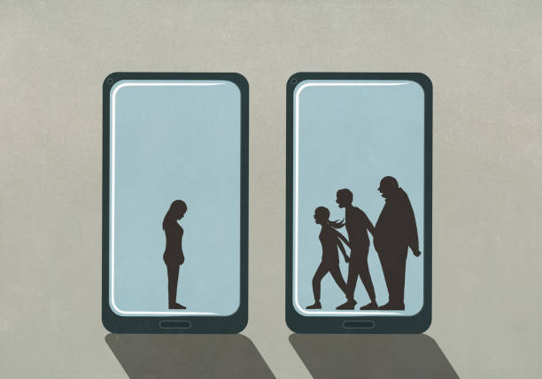
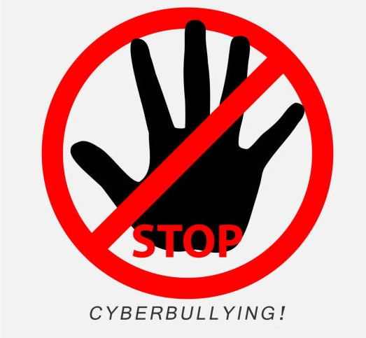

Gewalt in der Sprache online
– für Kinder der 5./6. Klasse
Herzlich willkommen
Hier lernst du alles rund um Gewalt in der Sprache online
ein kurzer Exkurs für Schüler der 5. und 6. Klasse

Mit den folgenden Seiten erfährst du, was sprachliche Gewalt ist, warum sie schadet,
wie du dich verhalten kannst und wie du selbst dazu beitragen kannst, dass Sprache
respektvoller wird.
Klicke auf den Button, um loszulegen.
Was ist Gewalt in der Sprache?
Sprachliche Gewalt umfasst Äußerungen, die andere Menschen verletzen,
einschüchtern, herabwürdigen oder bedrohen. Sie kann sowohl verbal als auch digital
auftreten und schadet vielen Menschen. Dabei kann diese sprachliche Gewalt sowohl
direkt als auch indirekt verwendet werden.
💡
Wusstest du?
Laut einer Studie der DAK-Gesundheit wurde jedes dritte Kind in Deutschland zwischen
10 und 18 Jahren bereits mindestens einmal im Internet beleidigt oder gemobbt.
Sprachliche Gewalt ist also ein weit verbreitetes Problem – du bist damit nicht allein.
Welche der folgenden Kommentare enthalten sprachliche Gewalt? Kreuze sie an!
✏️ Merke dir!
Sprachliche Gewalt verletzt – ob direkt im Gespräch oder digital über Chats und soziale Medien.
Beleidigungen, Drohungen, Ausgrenzung und Lästern sind alles Formen sprachlicher Gewalt.
Auch ein einziger Kommentar kann eine Person tief treffen – Absicht spielt dabei keine Rolle.
Warum ist sprachliche Gewalt schädlich?
Sprachliche Gewalt kann viele Folgen für die Opfer haben. Zum Beispiel kann sie das
Selbstwertgefühl einer Person einschränken und Gefühle wie Angst, Stress oder
Unsicherheit auslösen. Auch bei eigentlich sachlichen Diskussionen können provokative
Bemerkungen schnell Konflikte verursachen oder verstärken.
🧠
Wusstest du?
Wissenschaftler haben herausgefunden, dass verletzende Worte dieselben Regionen im
Gehirn aktivieren können wie körperlicher Schmerz. Worte können also buchstäblich
wehtun – nicht nur im übertragenen Sinne!
Welche der folgenden Aussagen sind Folgen von sprachlicher Gewalt? Kreuze sie an!
✏️ Merke dir!
Sprachliche Gewalt kann das Selbstwertgefühl dauerhaft beschädigen – auch wenn der Täter es „nicht so gemeint" hat.
Betroffene entwickeln häufig Angst, Stress und ziehen sich aus sozialen Gruppen zurück.
Auch Schulleistungen, Schlaf und das allgemeine Wohlbefinden können darunter leiden.
Wie reagiert man auf sprachliche Gewalt?
Man sollte, wenn man mit sprachlicher Gewalt konfrontiert wird, zunächst Ruhe bewahren
und versuchen, sich nicht provozieren zu lassen. Wenn die Person aus eigener Sicht eine
Grenze überschreitet, sollte man diese deutlich machen. Falls die Person trotzdem
weitermacht, sollte man das Gespräch umgehend beenden. Es ist wichtig, dass man auf
Gewalt nicht mit noch mehr Gewalt reagiert. Wenn man die Person zum Beispiel
zurückbeleidigt, eskaliert das die Situation nur und sorgt für mehr Konflikte.
Handelt es sich bei der sprachlichen Gewalt um aktives Mobbing, dem man nicht direkt
entkommen kann, dann ist es wichtig, dass man sich Unterstützung von anderen sucht
und dieses Verhalten meldet.
Stell dir vor, jemand schreibt in der Klassengruppe: „Du bist voll peinlich. Niemand mag dich." Welche Reaktionen sind gut? Kreuze sie an!
✏️ Merke dir!
Ruhig bleiben und nicht zurückbeleidigen – das macht die Situation nur schlimmer.
Screenshot machen: Beweise sichern, bevor Nachrichten gelöscht werden.
Hilfe holen ist kein Verrat – es ist mutig und richtig!
Wie kann man Gewalt in der Sprache unterbinden?
Vervollständige den Lückentext, indem du die passenden Wörter aus den Blöcken auswählst.
Wenn jemand online beleidigt wird, sollte man zunächst ruhig bleiben
und sich nicht
lassen.
Wer sprachliche Gewalt beobachtet, kann die betroffene Person
und zeigen, dass sie nicht allein ist.
Schwere Beleidigungen oder Mobbing sollte man einer Vertrauensperson
.
Bei Streitigkeiten ist es wichtig,
zu bleiben und andere nicht zu
.
Du musst nicht alleine mit sprachlicher Gewalt oder Mobbing umgehen. Es gibt viele
Menschen und Anlaufstellen, die dir helfen können – kostenlos und vertraulich.
Wichtig: Hilfe zu suchen ist kein Zeichen von Schwäche, sondern von Stärke!
📞
Nummer gegen Kummer
Kostenlose Telefonberatung für Kinder und Jugendliche, anonym und vertraulich.
116 111
Mo–Sa, 14–20 Uhr
🏫
Schule
Deine Vertrauenslehrkraft oder der Schulsozialpädagoge helfen dir direkt vor Ort.
🏠
Familie & Freunde
Eltern, Geschwister oder enge Freunde sind oft die ersten und wichtigsten Ansprechpersonen.
Wem kannst du dich anvertrauen, wenn du von sprachlicher Gewalt betroffen bist? Kreuze alle richtigen Antworten an!
Glückwunsch!
Du hast alle Aufgaben erfolgreich gemeistert und weißt jetzt bestens Bescheid über
sprachliche Gewalt. Bleib fair und respektvoll – du kannst viel bewirken!

🌟 So bin ich fair online – meine Checkliste
✓ Ich schreibe im Internet nur, was ich der Person auch ins Gesicht sagen würde.
✓ Wenn jemand online gemobbt wird, greife ich ein oder hole Hilfe.
✓ Ich mache einen Screenshot, bevor Nachrichten gelöscht werden.
✓ Ich wende mich an eine Vertrauensperson..
✓ Ich lache nicht mit, wenn jemand ausgelacht oder beleidigt wird.
✓ Ich denke nach, bevor ich etwas schreibe – Worte bleiben im Netz!
Jeder kann helfen, dass Sprache freundlicher wird – auch du!